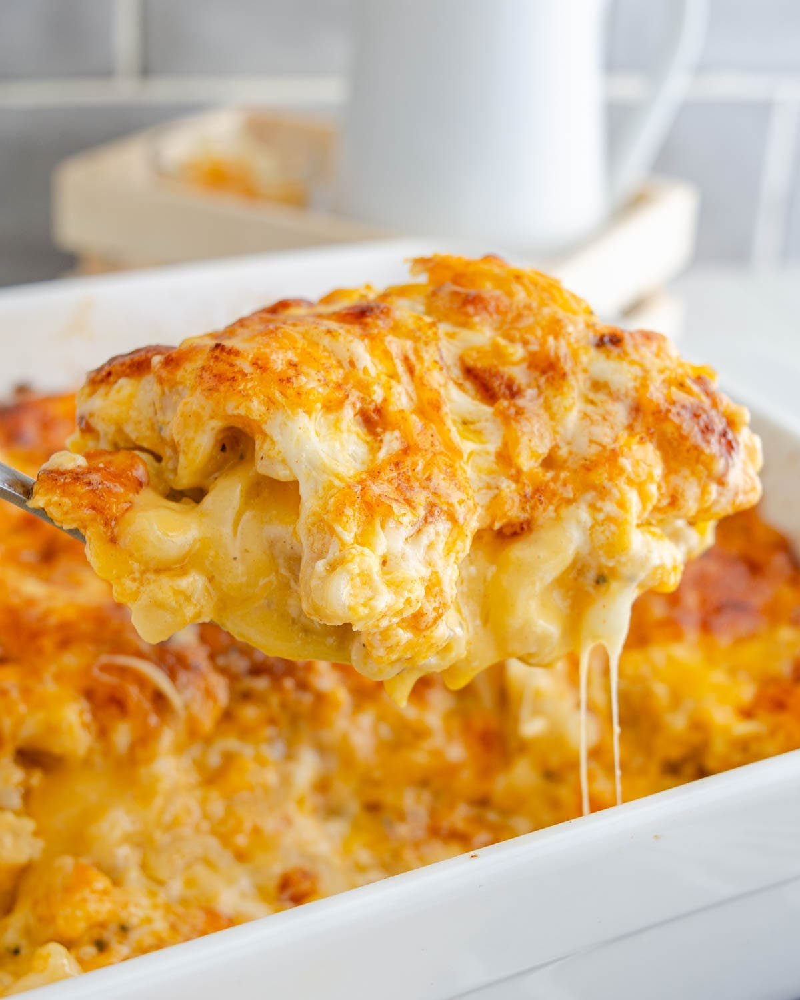

Odin Recipes
Home
The Ultimate Mac and Cheese

Description
This is the best mac and cheese you're ever going to have. Every year my family basically demands that I make this mac and every year they eat the entire pan in one go. It's more effort than any bluebox mac you'll find in the store but this dish is more than worth it.
Yields: 6 servings
Prep Time:15 min
Cook Time: 20 min
Total Time: 35 min
Ingredients
- 1 lb. elbow macaroni
- 4 Tbsp. unsalted butter
- 4 Tbsp. all-purpose flour
- 3 cups whole milk
- 1 cup heavy cream
- 1 tsp. dijon mustard
- 1/2 tsp. garlic powder
- 1/2 tsp. smoked paprika
- 1/2 tsp. cayenne
- salt and pepper to taste
- 6 total cups of cheese (for the bechamel sauce)
- 6 oz. monterey jack cheese
- 1/2 cup parmesan cheese
- 1/2 cup breadcrumbs
- 2 Tbsp. melted butter
Note about cheese
I use a different mix of cheese every time to keep things fresh, but typically I use 2-3 different types of cheese for the flavor and then add another cheese for stretchability. Typically I use a mix of medium sharp cheddar cheese (the sharper your cheddar the less it stretches), gouda, raclette, and mozzarella.
Also never buy pre-shredded cheese. they coat it in an anti caking agent which messes up the texture of the sauce.
Note about noodles
Elbow is what most people use so that's what I included here but it's important to note that I usually use shell pasta, as its shape allows it to hold the most amount of cheesey goodness inside. On occasion I'll use Cellentani, a spiral shaped pasta which also captures a lot of sauce.
Directions
- Bring a large pot of water to a boil. Add the macaroni and cook until al dente, following the package instructions. Drain, then place it back in the pot, and drizzle with olive oil to reduce stickiness.
- In a large saucepan, melt the butter over medium heat. Add flour and whisk continuously for about 2 minutes, until the mixture is smooth and bubbly.
- Gradually whisk in the milk and the heavy cream, ensuring there are no lumps. You want to take this part low and slow. Turn up the heat to medium and continue whisking until the mixture thickens, about 5-7 minutes.
- Stir in dijon mustard, garlic powder, smoked paprika, cayenne, salt, and pepper. Mix well
- Turn the heat back to low and slowly stir in the shredded cheese mix. Continue stirring until the cheese is fully melted and the sauce is smooth.
- Finally add the sauce to the cooked macaroni, stirring to coat the pasta evenly.
- Preheat the oven to 375° degrees. Lightly grease a casserole dish and pour your mac in, ensuring you spread evenly. Cut the monterey jack into cubes and place them intermittently throughout the pan(This will ensure that you'll get a nice big glob of cheese with every bite)
- In a small bowl, combine breadcrumbs, melted butter, and parmesan. Sprinkle evenly over the top of the dish, then place in the oven and bake until the top is golden brown, usually around 15-20 minutes.